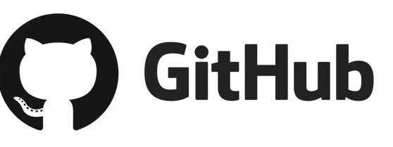

Automação de indicadores e criação de dashboards em Power BI

A ideia deste curso é de mostrar a quem não conhece a ferramenta ou conhece pouco alguns recursos desta que é hoje a principal ferramenta de criação de dashboards para business inteligence do mercado. este é um curso prático, onde o aluno irá aprender a criar seus relatórios do zero. aprenderá como obter dados de diferentes fontes, transformar os dados, aplicar métricas e modelagem para criação de dashboards.
Git e GitHub: Trabalhe colaborativamente e mostre todo seu potencial como desenvolvedor
Uma quantidade cada vez maior de recrutadores exige dos potenciais candidatos à uma vaga de desenvolvimento de sistemas sua conta no GitHub. "SHOW ME THE CODE!", eles dirão! Todo seu potencial como desenvolvedor pode ser comprovado ali. Chega de fazer provas de conhecimento infrutíferas, todas as provas que a empresa precisa de que você é um excelente profissional podem estar ali! git; gitHub; instalação; comandos; automação; porfolio